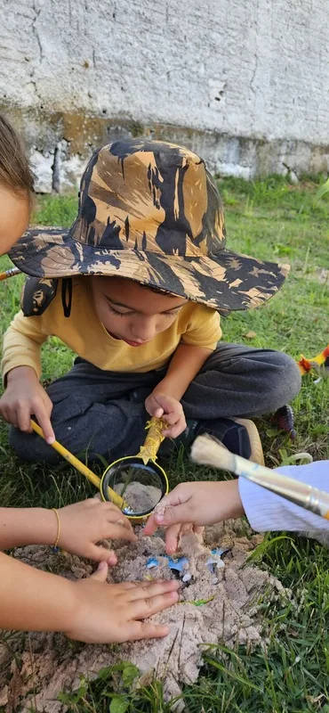

Currículo em Mosaico
Projetos, oficinas e módulos combinados a partir dos interesses reais do estudante — sem abrir mão de nenhuma competência da BNCC.
#ProtagonismoNa Lumiar Poços, a metodologia por projetos e turmas multietárias transforma a curiosidade dos estudantes em conhecimento real para a vida.
Visita gratuita, sem compromisso — seu filho passa uma manhã inteira com a turma.
2018
Em Poços de Caldas,
no Jardim dos Estados
I3 → EM
Do Infantil 3 ao
Ensino Médio
Top 12
Propostas pedagógicas
mais inovadoras do mundo
SEE-MG
Autorizada · Resolução
nº 107/2019
O mundo Lumiar
Cada criança tem um percurso próprio — e um adulto responsável por acompanhá-lo de perto, todos os dias. É isso que sustenta os quatro pilares abaixo.
Projetos, oficinas e módulos combinados a partir dos interesses reais do estudante — sem abrir mão de nenhuma competência da BNCC.
#ProtagonismoO tutor acompanha o desenvolvimento integral de cada estudante. Os mestres são especialistas que trazem o mundo real para dentro da sala.
#MentoriaPróximaVasta área externa arborizada no Jardim dos Estados. Horta, pátio e aprendizado que acontece muito além das quatro paredes.
#ArLivreMetodologia premiada por UNESCO, Stanford University e Microsoft entre as 12 propostas mais inovadoras do planeta.
#MosaicoDigitalComo funciona na prática
É a pergunta que mais ouvimos nas visitas — e ela merece uma resposta concreta. Clique nas três fases abaixo e percorra o caminho inteiro, do primeiro “o que você quer descobrir?” até a avaliação do trimestre. Em cada etapa, o percurso real de um estudante que queria ser astronauta.
Semana de Levantamento de Interesse
Antes de qualquer conteúdo, uma semana inteira dedicada a escutar. O tutor mapeia o que move cada estudante.
Interesse do Ciclo
O tutor cruza os interesses de todos e busca o fio que conecta — não é votação, é a pergunta onde todo mundo cabe.
Nascem dois projetos
Todo estudante participa do projeto coletivo e conduz também um projeto autoral só dele — currículo comum e único ao mesmo tempo.
Plataforma Mosaico + BNCC
Cada projeto entra no Mosaico e é cruzado com a BNCC. A plataforma mostra o que já cobre e o que falta — o tutor completa o resto.
Habilidades mapeadas no Mosaico
O tutor convoca os Mestres
O tutor conhece o estudante e costura o percurso inteiro. Os mestres — professores especialistas — conduzem a parte de cada disciplina.
O plano do trimestre
Antes de começar, o projeto ganha um plano formal: por que existe, aonde quer chegar e o que será entregue — acompanhável no Mosaico.
Culminância e avaliação integrada
O trimestre fecha com apresentação pública do que foi produzido e uma avaliação sob quatro olhares diferentes.
Nossos ciclos
Acolhimento, adaptação e turma reduzida
A entrada na escola é um momento delicado — e aqui ela é conduzida no ritmo da criança. Cada família recebe um plano de adaptação individual, e o mesmo tutor acompanha o grupo o ano inteiro, criando o vínculo que dá segurança para explorar.

Duas semanas de oficinas, esporte, culinária, ciência maluca e muito ar livre na nossa área verde. Para filhos de famílias Lumiar e de fora — de 4 a 12 anos.
Famílias Lumiar
Depoimentos de famílias da unidade de Poços de Caldas.
“Meu filho voltou a querer ir para a escola. Isso, para mim, já pagaria tudo. Ele chega em casa contando o que descobriu, não reclamando de prova.”
“A adaptação da minha filha no Infantil foi conduzida com um cuidado que eu nunca tinha visto. A tutora conhecia ela de verdade em duas semanas.”
“O espaço verde faz uma diferença enorme. Eles passam boa parte do dia ao ar livre, e a gente sente isso no humor e no sono das crianças.”
Avaliações no Google
Leia o que as famílias escrevem publicamente sobre a escola.
É a pergunta que mais ouvimos — e a resposta honesta é: manter uma criança infeliz até dezembro custa mais caro. Na Lumiar, o percurso é individual, então ninguém “chega atrasado” em relação à turma.
O percurso na Lumiar é individual e registrado no Mosaico Digital. Nas primeiras semanas o tutor mapeia exatamente onde seu filho está e monta o plano a partir dali — não a partir do calendário da turma.
Turmas multietárias e pequenas. Na prática, um estudante novo é notado e acolhido no primeiro dia — não some no meio de 35 colegas.
Por isso existe o Dia de Experiência: seu filho passa um dia real de aula antes de qualquer decisão. Você e ele decidem depois de viver a escola, não depois de ler um folheto.
Entendemos o aperto. Por isso a Condição de Transição Suave isenta a taxa de rematrícula aqui e permite parcelar o restante do semestre.
Agende sua visita
Preencha em 30 segundos. Nossa equipe retorna pelo WhatsApp com os melhores horários e as vagas disponíveis para a série do seu filho.
Conversa com a coordenação sobre o momento do seu filho
Visita guiada pelo espaço, salas e área verde
Dia de Experiência: seu filho vive um dia real de aula